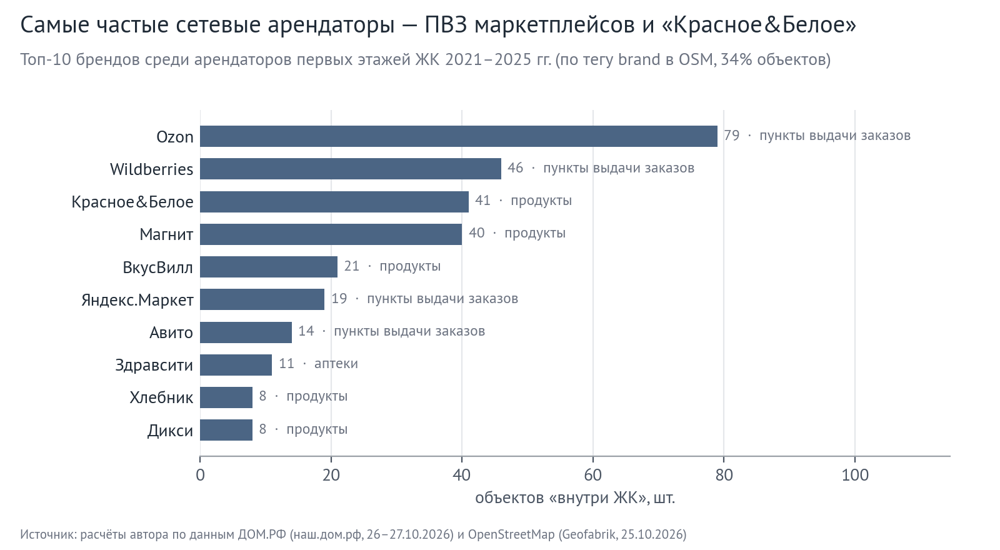
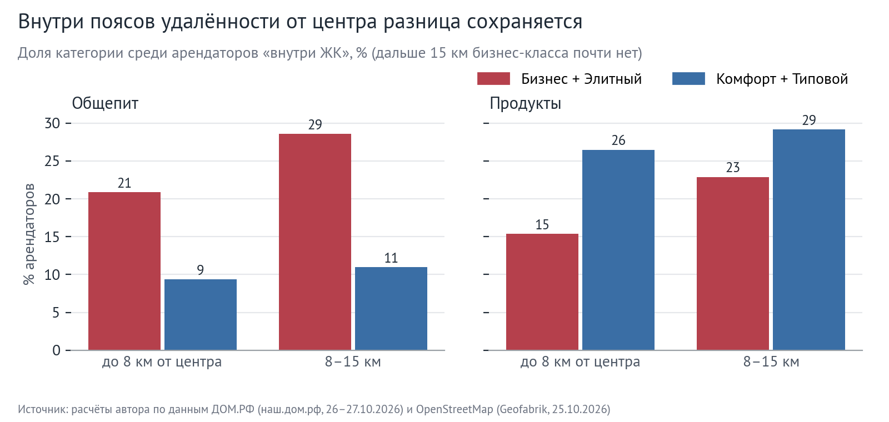
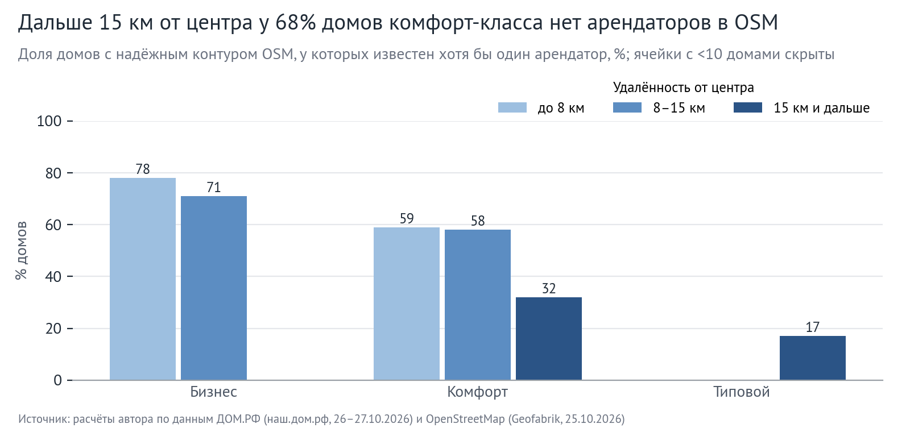

Кто занимает первые этажи новостроек Санкт-Петербурга
Санкт-Петербург. Жилые дома, введённые в 2021–2025 гг. Октябрь 2026 г.
Независимое студенческое исследование. Автор: Михаил. Открытые данные ДОМ.РФ и OpenStreetMap; код и методология — в репозитории проекта.
793жилых домов в 295 ЖК, 315 тыс. квартир
956арендаторов первых этажей в 491 домах с надёжным контуром OSM
23%арендаторов — пункты выдачи заказов маркетплейсов
−13 п. п.доля продуктовых в бизнес-классе по сравнению с комфорт-классом
Первые этажи новостроек, сданных в 2021–2025 гг., заняты прежде всего форматами повседневного спроса: продуктовые магазины (24% арендаторов) и пункты выдачи заказов (23%) вместе дают 48% объектов. Структура заметно различается по классам: в ЖК бизнес- и элитного класса продуктовых в 1,8 раза меньше, чем в комфорт- и типовом классе (17% против 30%), а общепита — в 2,1 раза больше (22% против 11%).
5 ключевых выводов
- Для продуктовых правило видно, но отчасти это эффект локации. Согласно классификации бизнес-класса NF GROUP, в нежилых помещениях такого класса нежелательны общепит и продуктовые магазины. Доля продуктовых в ЖК бизнес- и элитного класса на 13 п. п. ниже (95% ДИ [−18; −8]); в поясе до 8 км от центра — 15% против 26%. Но относительно своего окружения (500 м) продуктовых в ЖК обеих групп больше почти одинаково — в 1,3 и 1,4 раза: бизнес-класс стоит там, где продуктовых меньше вообще.
- Для общепита — нет. Общепита в бизнес-классе больше: +11 п. п. (95% ДИ [6; 18]), и больше, чем в его же окружении (индекс 1,4 против 0,9 в комфорте). Меняется формат: рестораны и бары — 21% общепита бизнес-класса против 5% в комфорте, фастфуд — 12% против 33%. Данные согласуются с тем, что ограничение касается массовых форматов, а не общепита в целом.
- Маркетплейсы — новый якорный арендатор. 23% арендаторов — пункты выдачи заказов; в комфорт-классе — 27%. В новых ЖК доля ПВЗ в 2,0–2,4 раза выше, чем в окружающей застройке (500 м). Крупнейший оператор ПВЗ — Ozon (79 объектов, 50% ПВЗ с указанным брендом), далее Wildberries (46).
- 42% продуктовых — алкомаркеты (shop=alcohol/wine в OSM); «Красное&Белое» — третий по числу объектов сетевой арендатор (41).
- Насыщенность падает к окраинам. В Адмиралтейском и Петроградском районах — 21 и 12 арендаторов на 1 000 квартир, в Приморском (крупнейший по вводу, 34 тыс. квартир) — 4,2, в Пушкинском — 2,8. У домов комфорт-класса дальше 15 км от центра арендатор в OSM есть лишь в 32% случаев.
- Ручная сверка изменила метод. Проверка по Яндекс Картам показала, что при пороге 30 м в центре к дому привязывались арендаторы соседних зданий, а при ошибочном контуре — чужие. Порог снижен до 10 м, дома с недостоверным контуром исключены; выводы при порогах 0 и 30 м совпадают по направлению (таблица «Устойчивость»).
Основные показатели
| Показатель | Бизнес + Элитный | Комфорт + Типовой | Все | Разница Б+Э − К+Т |
|---|
| Арендаторов «внутри ЖК», шт. | 396 | 592 | 956 | — |
| Продуктовые, % | 16,7 | 29,7 | 24,5 | −13,1 п. п. |
| Общепит, % | 22,2 | 10,8 | 15,4 | +11,4 п. п. |
| Пункты выдачи заказов, % | 17,2 | 27,2 | 23,2 | −10,0 п. п. |
| Непрод. торговля, % | 11,1 | 7,8 | 9,1 | +3,3 п. п. |
| Арендаторов на 1 000 квартир | 11,4 | 3,6 | 5,0 | — |
Источник: расчёты автора по данным ДОМ.РФ и OpenStreetMap, 2026. Доли — от арендаторов «внутри ЖК» (≤10 м от корпуса, дома с надёжным контуром OSM), объект учитывается один раз на ЖК.
1. Вопрос и выборка
NF GROUP в обзоре рынка бизнес-класса Санкт-Петербурга за I полугодие 2026 г. относит к требованиям класса качество
нежилых помещений: в них возможны офисы, услуги и торговля, но нежелательны общепит и продуктовые магазины; для бизнес лайт
требований нет (по данным NF GROUP). Исследование проверяет, видно ли это правило в том, кто фактически занимает первые этажи
уже заселённых ЖК, — и как наполнение различается по классам и районам.
Выборка — все 793 жилых домов Санкт-Петербурга со статусом «Сдан» в ДОМ.РФ и датой ввода 2021–2025 гг.
(295 ЖК, 315 317 квартир). Класс — официальный фильтр каталога ДОМ.РФ. Медиана расстояния до центра у элитных и бизнес-домов —
3,8 и 5,1 км, у комфорт и типовых — 14,2 и 20,8 км, — поэтому ниже каждое сравнение проверяется с поправкой на локацию.
| Класс ДОМ.РФ | Домов | ЖК | Квартир | Медиана до центра, км | С надёжным контуром | Плотность арендаторов на 1 000 кв. | Домов с арендатором, % |
|---|
| Элитный | 22 | 21 | 4 492 | 3,8 | 18 | 9,9 | 50 |
| Бизнес | 104 | 70 | 40 560 | 5,1 | 78 | 11,6 | 72 |
| Комфорт | 571 | 173 | 232 655 | 14,2 | 337 | 3,8 | 47 |
| Типовой | 96 | 38 | 37 610 | 20,8 | 58 | 2,5 | 28 |
| Итого | 793 | 295 | 315 317 | 13,0 | 491 | 5,0 | 49 |
Источник: расчёты автора по данным ДОМ.РФ и OpenStreetMap, 2026
2. Структура арендаторов

Комфорт и типовой класс — это «магазин у дома»: продукты (30%), ПВЗ (27%) и аптеки
(8%). В бизнес- и элитном классе структура ровнее: больше общепита (22%), салонов красоты
(13%) и офисов (2% против 0,3%).

3. Проверка правила классификации

Разница по продуктовым (−13 п. п.), ПВЗ (−10 п. п.) и общепиту (+11 п. п.) значима: 95% доверительные интервалы
(бутстрэп по 50 и 91 ЖК) не включают ноль. По непродовольственной торговле разница (+3 п. п.,
ДИ [−0; 7]) незначима.
Это не эффект центра?

Внутри поясов разница сохраняется: до 8 км продуктовые — 15% против 26%,
в поясе 8–15 км — 23% против 29% (у бизнес-класса здесь всего
70 объектов). Второй контроль — сравнение ЖК с его же окружением
(все объекты OSM в радиусе 500 м): индекс 1,0 означает «как вокруг». Продуктовых в ЖК обеих групп больше, чем вокруг, почти одинаково
(1,32 и 1,40), но в окружении бизнес-класса их доля ниже
(13% против 21%) — значит, заметная часть разницы
объясняется локацией. С общепитом иначе: в бизнес-классе его больше, чем вокруг (1,36), в комфорте —
меньше (0,91). ПВЗ в новых ЖК обеих групп в 2,0–2,4 раза чаще, чем вокруг.
| Категория | Б+Э: в ЖК, % | Б+Э: 500 м, % | К+Т: в ЖК, % | К+Т: 500 м, % | Б+Э: индекс | К+Т: индекс |
|---|
| Продукты | 16,7 | 12,7 | 29,7 | 21,2 | 1,32 | 1,40 |
| Пункты выдачи заказов | 17,2 | 7,3 | 27,2 | 13,3 | 2,37 | 2,04 |
| Общепит | 22,2 | 16,4 | 10,8 | 11,9 | 1,36 | 0,91 |
| Аптеки | 3,0 | 3,0 | 7,9 | 5,1 | 1,02 | 1,55 |
| Непрод. торговля | 11,1 | 21,7 | 7,8 | 17,7 | 0,51 | 0,44 |
| Красота | 13,4 | 7,4 | 5,4 | 4,8 | 1,81 | 1,12 |
Источник: расчёты автора по данным ДОМ.РФ и OpenStreetMap, 2026
Устойчивость
| Вариант расчёта | Общепит_Б+Э | Общепит_К+Т | Продукты_Б+Э | Продукты_К+Т | Объектов |
|---|
| основной вариант (≤10 м) | 22,2 | 10,8 | 16,7 | 29,7 | 988 |
| только объекты внутри контура (0 м) | 22,3 | 10,8 | 16,9 | 30,1 | 967 |
| порог 30 м (до ручной сверки) | 20,2 | 10,4 | 15,2 | 30,1 | 1 110 |
| только дома с точкой внутри контура OSM | 28,8 | 11,2 | 16,8 | 30,0 | 365 |
| без 5 крупнейших ЖК | 24,8 | 10,2 | 16,9 | 30,1 | 799 |
Источник: расчёты автора по данным ДОМ.РФ и OpenStreetMap, 2026. Доли общепита и продуктовых, % (Б+Э — Бизнес + Элитный, К+Т — Комфорт + Типовой).
4. Районы

Плотность арендаторов на 1 000 квартир различается по районам в 7 раз и более: от 20,9
в Адмиралтейском до 2,8 в Пушкинском и 0,5 в Колпинском.
Лидеры — районы, где в выборке преобладает бизнес-класс (доля Б+Э в Адмиралтейском — 81%,
в Петроградском — 100%).
Пять крупнейших по числу квартир районов (Приморский, Московский, Красносельский, Пушкинский, Выборгский) имеют
2,7–6,7 арендатора на 1 000 квартир; в Пушкинском 39% арендаторов — продуктовые.
| Район | Домов | Квартир | Доля Б+Э, % | Домов с арендатором, % | На 1 000 кв. | Общепит, % | Продукты, % | ПВЗ, % |
|---|
| Адмиралтейский | 16 | 7 041 | 81 | 94 | 20,9 | 15,0 | 10,2 | 12,9 |
| Фрунзенский | 10 | 4 875 | 20 | 80 | 13,3 | 12,3 | 21,5 | 15,4 |
| Петроградский | 16 | 4 268 | 100 | 56 | 12,4 | 28,3 | 26,4 | 11,3 |
| Выборгский | 41 | 18 404 | 24 | 63 | 6,7 | 14,6 | 22,8 | 25,2 |
| Красногвардейский | 33 | 12 687 | 18 | 46 | 5,5 | 12,9 | 28,6 | 27,1 |
| Невский | 27 | 15 926 | 15 | 67 | 4,3 | 11,6 | 17,4 | 26,1 |
| Приморский | 67 | 33 903 | 16 | 60 | 4,2 | 12,8 | 24,8 | 28,4 |
| Петродворцовый | 13 | 3 225 | 8 | 46 | 4,0 | 15,4 | 38,5 | 23,1 |
| Красносельский | 47 | 19 910 | 0 | 70 | 3,7 | 11,0 | 39,7 | 26,0 |
| Василеостровский | 24 | 13 859 | 58 | 58 | 3,0 | 24,4 | 17,1 | 34,1 |
| Пушкинский | 85 | 19 829 | 6 | 28 | 2,8 | 8,9 | 39,3 | 23,2 |
| Московский | 56 | 24 410 | 11 | 32 | 2,7 | 11,9 | 34,3 | 26,9 |
| Калининский | 13 | 4 545 | 38 | 54 | 2,4 | 18,2 | 45,5 | 36,4 |
| Колпинский | 13 | 4 197 | 0 | 15 | 0,5 | 0,0 | 0,0 | 50,0 |
| Курортный | 24 | 2 970 | 0 | 0 | 0,0 | — | — | — |
Источник: расчёты автора по данным ДОМ.РФ и OpenStreetMap, 2026. Районы с 10 и более домами в выборке.

Доля домов, у которых OSM знает хотя бы одного арендатора, падает от центра к окраинам и от старых домов к новым
(сданы в 2021 г. — 55%, в 2025 г. — 25%). Это сумма двух эффектов, которые открытые данные
не разделяют: помещения действительно пустуют или ещё не заняты, и OSM медленнее обновляется на окраинах. Поэтому на окраинах выводы
о структуре опираются на меньшее число объектов.
5. Методология
- Дома. ДОМ.РФ, каталог наш.дом.рф: 36 страниц списка сданных домов (place=78, objStatus=2) + 10 карточек, сохранены вручную
в браузере 26–27.10.2026. Удалены дубли (8), нежилые объекты (287), дома без даты ввода (3) и вне 2021–2025 гг. (630).
- Арендаторы. OpenStreetMap, выгрузка Geofabrik на 25.10.2026: 81 403 объекта в границах города, из них 6 885 «не арендаторов» исключены.
Классификация тегов — в приложении.
- Привязка. Точка дома ДОМ.РФ → контур здания OSM: точка внутри контура — 226 домов, ближайший контур ≤50 м —
417, контур не найден — 150. Надёжным считается контур, этажность которого не расходится с ДОМ.РФ
больше чем на 2 этажа (или не указана): таких 491 домов; исключены 150 домов без контура и 152 с расхождением этажности.
«Внутри ЖК» — объект OSM не дальше 10 м от надёжного контура; объект считается один раз на ЖК.
- Ручная сверка. Первая версия (порог 30 м, круг 50 м для домов без контура) сверялась с Яндекс Картами. На первых трёх ЖК
в центре ни один объект OSM не подтвердился: точки стояли на соседних зданиях или через улицу, а контур был чужим (этажность 5–8 против 10–11).
Отсюда новые правила; все три дома ими отбракованы. Выборочная сверка 12 ЖК с Яндекс Картами выполняется (шаблон — output/check_t7.csv); результат будет добавлен.
- Статистика. Доли — от всех арендаторов группы; 95% доверительные интервалы — кластерный бутстрэп по ЖК (2 000 повторов).
Контроль локации — пояса удалённости от Дворцовой площади (до 8 / 8–15 / 15+ км) и индекс «ЖК / окружение 500 м».
- Воспроизводимость. Каждая цифра получается скриптами src/01–08 (Python 3.9, pandas, shapely, matplotlib).
6. Ограничения
- Полнота OSM. У 51% домов с надёжным контуром OSM не знает ни одного арендатора; поэтому сравниваются доли, а не количества.
- Исключённые дома. 302 из 793 домов не участвуют в метриках «внутри ЖК». Среди элитных и бизнес-домов
надёжный контур чаще (76%), чем среди комфорт и типовых
(59%).
- Классы. В ДОМ.РФ нет «бизнес лайт» — он внутри «Бизнеса», поэтому прямо сравнить «бизнес vs бизнес лайт», как в классификации NF GROUP, нельзя.
Классы ДОМ.РФ и консультантов могут расходиться.
- Первый этаж ≠ 10 м. Даже при 10 м возможны объекты соседнего здания, стоящего вплотную. Порог 0 м (только внутри контура) даёт те же доли
(таблица «Устойчивость»).
- Нет площадей и ставок. Открытые данные не дают площадь помещений, ставку аренды и вакантность — только факт наличия арендатора.
Поле ДОМ.РФ «нежилой первый этаж» есть в карточках домов, но массовая выгрузка карточек невозможна (защита сайта), поэтому метрика не используется.
- Срез, не динамика. Данные на конец октября 2026 г.; сравнение «год к году» потребует повторной выгрузки.
Приложение. Категории арендаторов (теги OSM)
| Категория | Теги OpenStreetMap |
|---|
| Общепит | amenity: restaurant, cafe, fast_food, bar, pub, food_court, ice_cream |
| Продукты | shop: supermarket, convenience, alcohol, wine, bakery, butcher, greengrocer и др. |
| Пункты выдачи заказов | shop=outpost (Ozon, Wildberries, Яндекс Маркет, Авито) |
| Аптеки / Медицина | amenity=pharmacy; amenity: clinic, dentist, doctors; healthcare=* |
| Красота | shop: beauty, hairdresser, cosmetics, massage, nails |
| Фитнес и спорт | leisure: fitness_centre, sports_centre, dance; amenity=dojo |
| Детские и образование | amenity: kindergarten, childcare, language_school и др. |
| Бытовые и фин. услуги | amenity: bank, post_office, veterinary; shop: laundry, dry_cleaning, repair и др.; craft=* |
| Офисы | office=*, amenity=coworking_space |
| Непрод. торговля | прочие shop=* (одежда, хозтовары, электроника, цветы и др.) |
| Исключены (не арендаторы) | банкоматы, постаматы, терминалы, АЗС, храмы, киоски, ТЦ-«контейнеры» |